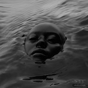
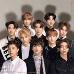

My Current Top 5 Favorite Albums
Here are some of my favorite albums currently, and my favorite track from it.
- Raven - Kelela 
- Heaven knows - PinkPantheress
- Regulate The First Album Repackage - NCT 127 
- Swimmer - Tennis
- Gaussian - Youra
Now Playing: Contact
Kelela is by far one of my favorite artists of all time. Raven truly resonated with me with its heavy themes and dance and ambient music.

Now Playing: True Romance
I fell in love with her first album "to hell with it" so I was very excited to hear her new releases. It's easy to say that I enjoyed this albbum a lot, I just wish her songs were a bit longer.
Now Playing: Knock On
I've been a fan of this group for many years, as I've seen them in concert twice! I was obsessed with this repackage when it released and I still am to this day.
Now Playing: Runner
Honestly, I love all of Tennis' music and this album just stands out to me so much. Shoutout to my favorite tracks "Runner" and "Need Your Love".
Now Playing: Airplane Mode
Such a nice and diverse album with some chill tunes and some upbeat tracks as well. Really an amazing artist.